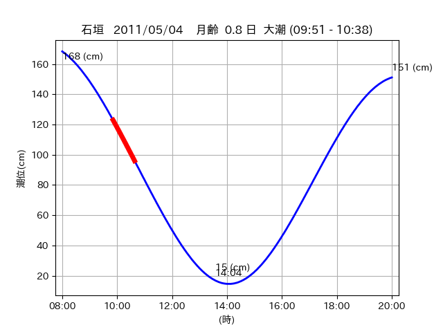
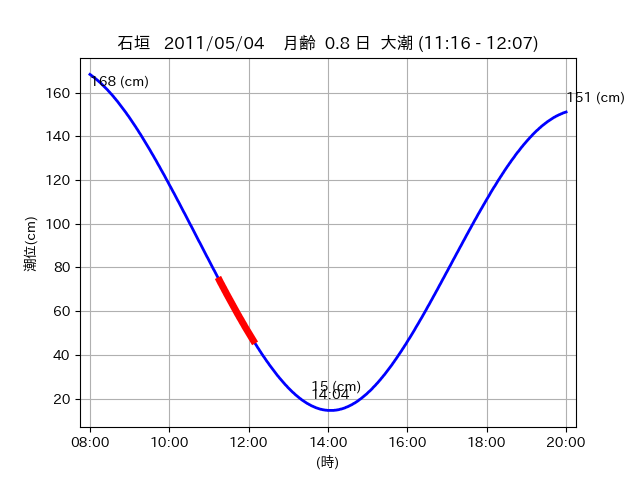

<!DOCTYPE html>
<html>
<head>
    
    <meta http-equiv="content-type" content="text/html; charset=UTF-8" />
    
        <script>
            L_NO_TOUCH = false;
            L_DISABLE_3D = false;
        </script>
    
    <style>html, body {width: 100%;height: 100%;margin: 0;padding: 0;}</style>
    <style>#map {position:absolute;top:0;bottom:0;right:0;left:0;}</style>
    <script src="https://cdn.jsdelivr.net/npm/leaflet@1.9.3/dist/leaflet.js"></script>
    <script src="https://code.jquery.com/jquery-3.7.1.min.js"></script>
    <script src="https://cdn.jsdelivr.net/npm/bootstrap@5.2.2/dist/js/bootstrap.bundle.min.js"></script>
    <script src="https://cdnjs.cloudflare.com/ajax/libs/Leaflet.awesome-markers/2.0.2/leaflet.awesome-markers.js"></script>
    <link rel="stylesheet" href="https://cdn.jsdelivr.net/npm/leaflet@1.9.3/dist/leaflet.css"/>
    <link rel="stylesheet" href="https://cdn.jsdelivr.net/npm/bootstrap@5.2.2/dist/css/bootstrap.min.css"/>
    <link rel="stylesheet" href="https://netdna.bootstrapcdn.com/bootstrap/3.0.0/css/bootstrap-glyphicons.css"/>
    <link rel="stylesheet" href="https://cdn.jsdelivr.net/npm/@fortawesome/fontawesome-free@6.2.0/css/all.min.css"/>
    <link rel="stylesheet" href="https://cdnjs.cloudflare.com/ajax/libs/Leaflet.awesome-markers/2.0.2/leaflet.awesome-markers.css"/>
    <link rel="stylesheet" href="https://cdn.jsdelivr.net/gh/python-visualization/folium/folium/templates/leaflet.awesome.rotate.min.css"/>
    
            <meta name="viewport" content="width=device-width,
                initial-scale=1.0, maximum-scale=1.0, user-scalable=no" />
            <style>
                #map_a54f6cc72d2cb2e185632a8565e106a0 {
                    position: relative;
                    width: 2048.0px;
                    height: 1600.0px;
                    left: 0.0%;
                    top: 0.0%;
                }
                .leaflet-container { font-size: 1rem; }
            </style>
        
</head>
<body>
    
    
            <div class="folium-map" id="map_a54f6cc72d2cb2e185632a8565e106a0" ></div>
        
</body>
<script>
    
    
            var map_a54f6cc72d2cb2e185632a8565e106a0 = L.map(
                "map_a54f6cc72d2cb2e185632a8565e106a0",
                {
                    center: [24.213, 124.003],
                    crs: L.CRS.EPSG3857,
                    ...{
  "zoom": 12,
  "zoomControl": true,
  "preferCanvas": false,
}

                }
            );

            

        
    
            var tile_layer_d5ce896b3fdf860ef02abfd6dc4cff80 = L.tileLayer(
                "https://cyberjapandata.gsi.go.jp/xyz/seamlessphoto/{z}/{x}/{y}.jpg",
                {
  "minZoom": 0,
  "maxZoom": 18,
  "maxNativeZoom": 18,
  "noWrap": false,
  "attribution": "\u5730\u7406\u9662\u5730\u56f3",
  "subdomains": "abc",
  "detectRetina": false,
  "tms": false,
  "opacity": 1,
}

            );
        
    
            tile_layer_d5ce896b3fdf860ef02abfd6dc4cff80.addTo(map_a54f6cc72d2cb2e185632a8565e106a0);
        
    
            var marker_7696177d4accafb7a23d4e5b4bcfa0f0 = L.marker(
                [24.2172, 124.0264],
                {
}
            ).addTo(map_a54f6cc72d2cb2e185632a8565e106a0);
        
    
            var icon_91291a9ea7a8df435b2f01234940d152 = L.AwesomeMarkers.icon(
                {
  "markerColor": "orange",
  "iconColor": "white",
  "icon": "info-sign",
  "prefix": "glyphicon",
  "extraClasses": "fa-rotate-0",
}
            );
        
    
        var popup_6307a1c378b767fcc33a540f121d068f = L.popup({
  "maxWidth": "100%",
});

        
            
                var html_d8b29c08d34a0306b6864df1451777c2 = $(`<div id="html_d8b29c08d34a0306b6864df1451777c2" style="width: 100.0%; height: 100.0%;"><table><tr><td></td></tr><tr><td><center>20110504 No.1 </center></table></td></tr></table</div>`)[0];
                popup_6307a1c378b767fcc33a540f121d068f.setContent(html_d8b29c08d34a0306b6864df1451777c2);
            
        

        marker_7696177d4accafb7a23d4e5b4bcfa0f0.bindPopup(popup_6307a1c378b767fcc33a540f121d068f)
        ;

        
    
    
                marker_7696177d4accafb7a23d4e5b4bcfa0f0.setIcon(icon_91291a9ea7a8df435b2f01234940d152);
            
    
            var poly_line_e2aab575b8998a65efdb6f7d7203ce3f = L.polyline(
                [[24.2172, 124.0264], [24.2123, 124.0193]],
                {"bubblingMouseEvents": true, "color": "#00FFFF", "dashArray": null, "dashOffset": null, "fill": false, "fillColor": "#00FFFF", "fillOpacity": 0.2, "fillRule": "evenodd", "lineCap": "round", "lineJoin": "round", "noClip": false, "opacity": 1.0, "smoothFactor": 1.0, "stroke": true, "weight": 3}
            ).addTo(map_a54f6cc72d2cb2e185632a8565e106a0);
        
    
            var marker_ef7a400d6f620234255c2ce556b4eaaa = L.marker(
                [24.2109, 124.0148],
                {
}
            ).addTo(map_a54f6cc72d2cb2e185632a8565e106a0);
        
    
            var icon_b7131fdc599339133f73f45bf8b26c16 = L.AwesomeMarkers.icon(
                {
  "markerColor": "orange",
  "iconColor": "white",
  "icon": "info-sign",
  "prefix": "glyphicon",
  "extraClasses": "fa-rotate-0",
}
            );
        
    
        var popup_806f6e348bb0f9f1ea2f06c4f899e18e = L.popup({
  "maxWidth": "100%",
});

        
            
                var html_b658cdeb445e55bbef11317727e43948 = $(`<div id="html_b658cdeb445e55bbef11317727e43948" style="width: 100.0%; height: 100.0%;"><table><tr><td></td></tr><tr><td><center>20110504 No.2 </center></table></td></tr></table</div>`)[0];
                popup_806f6e348bb0f9f1ea2f06c4f899e18e.setContent(html_b658cdeb445e55bbef11317727e43948);
            
        

        marker_ef7a400d6f620234255c2ce556b4eaaa.bindPopup(popup_806f6e348bb0f9f1ea2f06c4f899e18e)
        ;

        
    
    
                marker_ef7a400d6f620234255c2ce556b4eaaa.setIcon(icon_b7131fdc599339133f73f45bf8b26c16);
            
    
            var poly_line_17942bd9d2cb0cbd895bc6869789add9 = L.polyline(
                [[24.2109, 124.0148], [24.2126, 124.0198]],
                {"bubblingMouseEvents": true, "color": "#FF00FF", "dashArray": null, "dashOffset": null, "fill": false, "fillColor": "#FF00FF", "fillOpacity": 0.2, "fillRule": "evenodd", "lineCap": "round", "lineJoin": "round", "noClip": false, "opacity": 1.0, "smoothFactor": 1.0, "stroke": true, "weight": 3}
            ).addTo(map_a54f6cc72d2cb2e185632a8565e106a0);
        
    
            var marker_10bbdd070630dc4d0153053cd612d6ec = L.marker(
                [24.2159, 123.9992],
                {
}
            ).addTo(map_a54f6cc72d2cb2e185632a8565e106a0);
        
    
            var icon_3161636d2a8f97a11c76c1438e095ab4 = L.AwesomeMarkers.icon(
                {
  "markerColor": "orange",
  "iconColor": "white",
  "icon": "info-sign",
  "prefix": "glyphicon",
  "extraClasses": "fa-rotate-0",
}
            );
        
    
        var popup_ee7dcc529589708ea49a60686b6004d4 = L.popup({
  "maxWidth": "100%",
});

        
            
                var html_31ee8bcefd94182aa070cda77f22edcf = $(`<div id="html_31ee8bcefd94182aa070cda77f22edcf" style="width: 100.0%; height: 100.0%;"><table><tr><td></td></tr><tr><td><center>20110504 No.3 </center></table></td></tr></table</div>`)[0];
                popup_ee7dcc529589708ea49a60686b6004d4.setContent(html_31ee8bcefd94182aa070cda77f22edcf);
            
        

        marker_10bbdd070630dc4d0153053cd612d6ec.bindPopup(popup_ee7dcc529589708ea49a60686b6004d4)
        ;

        
    
    
                marker_10bbdd070630dc4d0153053cd612d6ec.setIcon(icon_3161636d2a8f97a11c76c1438e095ab4);
            
    
            var poly_line_b6accabe25e8a05c4c82ac1fd242ceba = L.polyline(
                [[24.2159, 123.9992], [24.2108, 124.0064]],
                {"bubblingMouseEvents": true, "color": "#00FFFF", "dashArray": null, "dashOffset": null, "fill": false, "fillColor": "#00FFFF", "fillOpacity": 0.2, "fillRule": "evenodd", "lineCap": "round", "lineJoin": "round", "noClip": false, "opacity": 1.0, "smoothFactor": 1.0, "stroke": true, "weight": 3}
            ).addTo(map_a54f6cc72d2cb2e185632a8565e106a0);
        
</script>
</html>